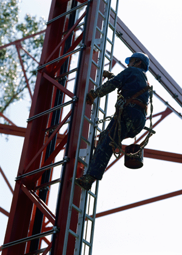

ist eine personenbezogene Maßnahme zum Schutz gegen Absturz für Situationen, in denen der Einsatz Persönlicher Schutzausrüstungen gegen Absturz aufgrund der Eigenart und des Fortgangs durchzuführender Arbeiten nicht oder noch nicht gerechtfertigt ist. Sie gewährleistet ein sicheres Festhalten. Ein sicheres Festhalten ist möglich, wenn beide Hände und ein Fuß oder beide Füße und eine Hand gleichzeitig Kontakt mit Konstruktionsteilen von Freileitungsmasten haben. Dabei müssen die zum Festhalten genutzten Konstruktionsteile mit den Händen ausreichend umgriffen werden können.